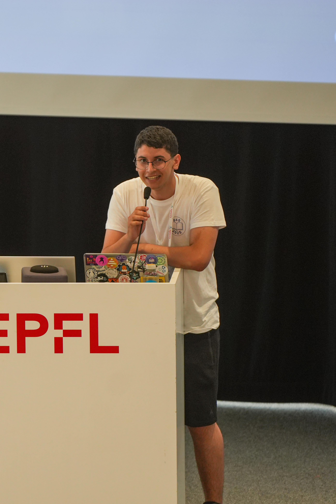

For transmission system operators
Readable, tested rules for congestion, learned from your own operators.
GridPolicy turns your operators' past decisions and your grid simulations into short, tested, readable rules, and a playbook for the risks detected in advance.
- 13.9 / 28
- days survived, IEEE 14-bus, forced outages
- 23.9 %
- of 28-day scenarios fully survived (rule-based baseline 19.2 %, greedy 20.8 %)
- +1.23 d
- vs. hand-written rule-based baseline, 95 % CI +0.39 to +2.12
Research prototype, IEEE 14-bus test grid.
Green < 90 % Amber < 100 % Red overloaded
The diagram scrolls sideways on a narrow screen.
01 Problem
Congestion is managed with the most expensive lever.
Congestion is rising
Renewable generation often sits far from load, and new lines take years to permit and build. Corridors that already exist carry more power, more often, than they were planned for.
Redispatch
When a corridor is congested, operators pay plants on both sides of the bottleneck to change output. One reduces, another increases, and the flow on the constrained line falls. It works. It is slow to arrange and expensive, and the cost is passed on to consumers through grid fees.
Switching is under-used
Opening one bay and closing another can redirect flow without paying a plant to move. A switching action has to satisfy N-1: the grid must stay safe if any single line fails. Finding such an action in the time an operator has is combinatorially hard — hundreds of substation configurations, each needing a power-flow check and a contingency check. Tools in use either optimize each snapshot from scratch, with nothing an engineer can file and reuse, or train opaque reinforcement-learning agents, as in RTE’s L2RPN competitions.
Building on strong tools
Today's optimizers compute each situation in depth. GridPolicy adds reusable rules engineers can read, file and approve.
Operator experience as an asset
Turn the experience in past operator decisions into tested rules the whole team can reuse.
Works with your tools and enhances them
- Existing Forecasts and security analysis
- Existing Remedial-action optimizers an in-depth answer per situation
- GridPolicy Short, tested, readable rules plus a playbook for risks detected in advance
- Operator Reads, files, approves and reuses
Two inputs feed GridPolicy: operators' past decisions (recorded remedial actions) and the TSO's own grid simulations (power flow, N-1 analysis).
What it adds: reusable rules engineers can read, file and approve, built from operator experience.
02 Method
A search loop over code, scored by physics.
- 1 Propose a candidate policy, as code
- 2 Simulate many scenarios, including line failures
- 3 Score with the fitness below
- 4 Keep the best as parents of the next generation
- 5 Output readable code an engineer can test
The evolver is not a language model. It uses structured mutation and crossover. It starts from the hand-written rule-based baseline in the same template — act at 95 %, undo below 80 %, redispatch if switching leaves a line above 100 % — and it only tunes thresholds, scoring weights, and which blocks are enabled. A search run is one evolution. The three outage seeds on the test set are three random draws of line outages, not three evolutions.
Fitness of a candidate:
100 × survival share − 2 × overload hours − 0.001 × redispatch MWh − 0.01 × ms per step − 2 × N-1 violations per hourly check − 0.5 × switching actions per day.
Survival share is the fraction of the episode before the simulator stops. The other terms penalize residual overload, paid redispatch, slow decisions, N-1 breaches and unnecessary switching. Topology is tried before redispatch because it costs less under this score.
03 From rules
From rules to a prepared grid.
-
MEASURED
Evolved readable congestion rules, scored in a power-flow simulator with outages. Results.
-
PILOT
Learn from recorded remedial actions (anonymized), test in simulation, improve. Playbook for risks detected in advance: 'if line X trips at peak, do A, then B'.
-
NEXT
Predict which lines are likely to congest and which outages would hurt most, with tested responses prepared for risks detected in advance.
-
VISION
Small, cheap switching in advance to avoid congestion; playbooks checked with neighboring operators; evidence on real bottlenecks for grid planning.
04 Demo
Move the load. Watch the policy decide.
Simplified demo — DC power flow on a schematic 8-bus grid, not real grid data.
Illustrative, simplified policy with the same decision order; not the benchmark code.
Trip a line to simulate an outage, then compare doing nothing with the policy.
Toy 8-node illustration of how a rule reacts. Measured results come from the IEEE 14-bus benchmark below.
Circle — substation. MW is generation (+) or load (−). Dashed line — in service, colored by loading: green below 80 %, orange 80–100 %, red above 100 %. Gray dotted line — tripped line (outage). Solid gray line with an open breaker — line switched off by the policy.
The diagram scrolls sideways on a narrow screen.
| Do nothing | Policy active | |
|---|---|---|
| Highest line loading | ||
| Overloaded lines | ||
| Lines switched | ||
| Redispatch |
05 Policy
This is the whole policy.
Program from search run 0 (the 3 runs evolved different thresholds). It acts above 97.4 %, undoes below 90.8 %, and redispatches only if the best switch still leaves a line above 107 %.
On the test set this program survived 14.8 days (53.0 %), +2.12 d versus the rule-based baseline (95 % CI +1.13 to +3.24), +1.06 d versus greedy (95 % CI +0.21 to +1.96), and 0 MWh of redispatch.
Evolution moved the rule-based baseline's thresholds from 95 % / 80 % / 100 % to 97.4 % / 90.8 % / 107 %: act later, undo sooner, and almost never pay for redispatch.
What follows is the control flow of that program, not a different policy. One action is returned per 5-minute step. The function does not switch and redispatch in the same step.
def act(obs):
Program from search run 0. The step returns one action.
loading = max_line_loading(obs)
Highest line loading on this snapshot.
if loading <= 0.974:
At or below 97.4 %, do not switch for congestion.
if a_line_is_tripped(obs):
Reconnect a tripped line first.
return reconnect(obs)
That reconnect is the only action this step.
if loading < 0.908 and switching_is_active(obs):
Below 90.8 %, and a switching intervention is still active.
undone = undo_one_switch(obs)
Simulate undoing one switching action.
if max_line_loading(undone) <= 0.974:
Undo only if the restored grid stays at or under 97.4 %.
return undone
That undo is the action this step. Otherwise it is not applied.
return do_nothing()
Nothing to reconnect, or the undo would not stay under 97.4 %.
best = best_of(simulate(a) for a in substation_actions())
Above 97.4 %: simulate the 178 single-substation reconfigurations. Each candidate is a power-flow.
if best.max_loading <= 1.07:
If the best leaves max loading at or below 107 %, apply that switch.
return best.action
The step returns that one switch.
return better_of(best, best_redispatch(obs))
Otherwise compare that best switch with the best redispatch and return whichever scores better. Not both.
One step an engineer can re-simulate
Line 4–5 reaches 98 %. The policy simulates 178 substation actions, picks a reconfiguration of substation X, and the max loading falls to 91 %. Line 4–5 is the line that crossed the 97.4 % threshold. Each of the 178 candidates is a power-flow. The reconfiguration of substation X is the action that was applied: it was the one those power-flows selected, and the max loading fell to 91 %, which is at or below 107 %, so the step returns that switch and does not also redispatch.
The demo above is an illustrative, simplified policy with the same decision order and these thresholds, not the benchmark code, and its numbers are illustrative.
06 Results
Longer survival than a hand-written rule-based baseline, on par with greedy topology search.
How the benchmark was run
The simulator is Grid2Op 1.12.5 with LightSim2Grid, on the IEEE 14-bus grid (l2rpn_case14_sandbox: 20 lines, 6 generators). Each step is 5 minutes.
An episode is a 28-day scenario (8,064 steps). It ends early when the simulator declares a blackout. Days survived is the time before that, with a maximum of 28.
The stress is random line outages: one of 6 lines, for up to 4 h, at most once per 24 h.
Training: each search run evolved its policy on 32 training scenarios (2,500 steps each), with its own outage draws. Test: 40 different scenarios the search never saw, for the full 28 days, with 3 outage seeds. The training and test sets are disjoint.
Three independent search runs are three separate evolutions. Three outage seeds are three random outage draws at test time. They are not the same thing. The 13.9 days is the average of the 3 evolved programs, each tested on 40 scenarios × 3 outage seeds (360 paired episodes per comparison).
Every agent faces the identical scenario and the identical outage sequence. Differences are paired. The 95 % CI is a cluster bootstrap over scenarios. v1 versus the rule-based baseline: 86 wins, 239 ties, 35 losses out of 360 episodes.
Without outages, greedy search and the rule-based baseline already survive all 40 test scenarios, so the outage setting is the main benchmark.
The search starts from the hand-written rule-based baseline in the same template: act at 95 %, undo below 80 %, and redispatch if switching leaves a line above 100 %. The evolver is not a language model. It uses structured mutation and crossover, and it only tunes thresholds, scoring weights, and which blocks are enabled.
- Do nothing. Never acts.
- Redispatch only. Only moves generators.
- Hand-written rule-based baseline. A rule-based operator heuristic.
- Greedy topology search. At each step where max loading ≥ 95 %, it simulates all 178 single-substation reconfigurations and applies the one with the lowest max loading. It reconnects lines, and it reverts to the reference topology below 80 %. This is greedy search over all 178 switching actions.
The chart scrolls sideways on a narrow screen.
Paired contrasts, on a difference scale in days, not the 0–28 scale of the bars. vs rule-based baseline: +1.23 d, 95 % CI +0.39 to +2.12. vs greedy: +0.17 d, 95 % CI −0.61 to +0.97. The greedy interval crosses zero and is marked as a tie. The five bars have no whiskers.
Redispatch for the pooled v1 result is 1.9 MWh/day. Each search run took 34–44 min on 7 cores.
Limitations
- 14-bus test grid, synthetic outages, no TSO data.
- Tie with greedy search. One of the three evolved programs is significantly worse than greedy (−1.49 d, 95 % CI −2.70 to −0.36).
- The N-1 penalty did not reduce N-1 violations: 6.82 per hourly check, versus 6.78 for greedy and 6.71 for the rule-based baseline.
- Slightly slower decisions: 264 ms versus 223 ms for greedy, per triggered step.
- No language model was used in this run.
07 For TSOs
Built to sit beside the control room, not inside it.
-
01
Vendor-independent
The search needs a simulate(action) call and a generator of candidate actions. An adapter can target the operator’s own power-flow engine, or a CGMES model through PowSyBl.
-
02
Advisor, not actuator
It proposes a policy for a person to read and approve. It does not switch the grid, and it is not wired into the control system.
-
03
The operator’s own data
An anonymized grid model, historical snapshots and recorded remedial actions, back-tested against the decisions that were actually taken. The data stays in an environment the TSO controls when that is required.
-
04
Traceable
Every recommended action points at a line of policy code and at the simulation that scored it. If the line cannot be justified, it does not go forward.
-
05
Runs where your data is
The search runs offline in an environment the operator controls, can use an open-weight model, and never needs to send grid data out. The rules themselves run in the control room with no AI model, about a quarter of a second per decision. Advisor only, no automatic switching.
08 Roadmap
From a 14-bus benchmark to a shadow-mode advisor.
-
Q4 2026Next
Benchmarks at IEEE 118-bus scale; first runs of the language-model-guided search (implemented, not yet run).
-
H1 2027
Pilot with one TSO on anonymized data: learned rules + playbook for risks detected in advance, shadow mode.
-
H2 2027
Congestion-risk prediction, shadow-mode decision support, validation with a second TSO.
09 Team
Founder

Adam Bekkar
I'm studying for an MSc in Computer Science at ETH Zurich, with a major in Machine Intelligence and a minor in Theoretical Computer Science, after a BSc in Computer Science at EPFL. During a summer research internship at EPFL's RS3 Lab, I worked on memory allocation for CXL hardware, which taught me a lot about managing resources efficiently. As President of Students 4 Students (EPFL student association) and IT manager for several student associations, I have built and run networks and applications used by hundreds to thousands of students.
More about me: adam.bekkar.ch
GridPolicy would be based in Zurich.
10 Contact
Contact
GridPolicy is being developed as a submission to the Grid Innovation Alliance open call "The Grid at its Limit" (2026). For questions about this submission, please write to: